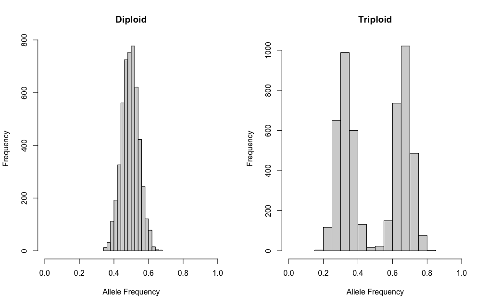
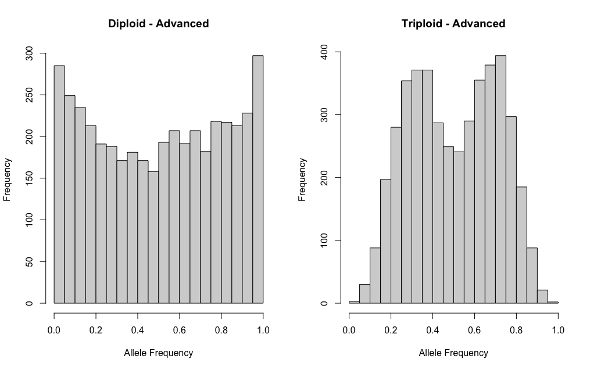

We provide two different approaches to simulate heterozygous biallelic sites within an individual. Here we simply review these options.
Simple or Idealisitic
A simple approach to simulating data can be done with
sim.ind.simple() where coverage is equal among sites and
counts of allele A are sampled with a binomial distribution. For
example, if we want to simulate 5000 sites at 100x coverage for a
diploid and a triploid, we would do the following:
dip <- sim.ind.simple(mvec = 0.5, cover = 100,
s.size = 5000, sampled = TRUE)
tri <- sim.ind.simple(mvec = c(0.33, 0.67), cover = 100,
s.size = 5000, sampled = TRUE)
par(mfrow=c(1,2))
hist(dip[,2]/dip[,1], main = "Diploid", xlab = "Allele Frequency", xlim = c(0,1))
hist(tri[,2]/tri[,1], main = "Triploid", xlab = "Allele Frequency", xlim = c(0,1))This creates beautiful plots! However, in reality this does not look like the data we collect.

Advanced or Realistic
To simulate more realistic data, we have two ‘advance’ options:
sim.ind.BB() or sim.ind.BB.tau().
For both of these functions, the total coverage for each site is sampled from a truncated poisson distribution (Pfenninger et al. 2022), with the rtrunc function from truncdist. Given a randomly selected proportion (i.e. mean and associated variance), the copies of allele A is defined with a binomial sample with the probability defined by the beta distribution (i.e. a beta-binomial) and the copies of allele B is equal to the remainder. Data is then filtered to remove any homozygous sites where only one allele was sampled by chance. We then filtered the sites based on the total coverage and sequencing coverage of each allele. This function can also filter sites based on truncated allele frequencies. Finally, we randomly sample an allele with equal probability at each site. The resulting data set includes the total coverage per site and the coverage associated with a randomly sampled allele.
If we want to use one of the advance functions to simulate a similar scenario as above, it might look something like this:
dip.adv <- sim.ind.BB(mvec = 0.5, svec = 0.1, avec = 1.0,
error = 0.001, s.size = 5000,
max.coverage = 100, min.coverage = 50, lambda = 75)
tri.adv <- sim.ind.BB(mvec = c(0.33, 0.67), avec = c(0.5, 0.5), svec = c(0.01, 0.01),
error = 0.001, s.size = 5000,
max.coverage = 100, min.coverage = 50, lambda = 75)
par(mfrow=c(1,2))
hist(dip.adv[,2]/dip.adv[,1], main = "Diploid - Advanced",
xlab = "Allele Frequency", xlim = c(0,1))
hist(tri.adv[,2]/tri.adv[,1], main = "Triploid - Advanced",
xlab = "Allele Frequency", xlim = c(0,1))The ploidal level of these samples is definitely not as clear cut as above!
